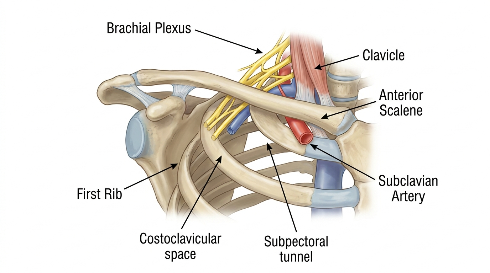

Thoracic Outlet Syndrome (NTOS): A Biomechanical Understanding of Costoclavicular Space Stenosis and Neurovascular Bundle Compression
While a cervical disc herniation involves direct compression of the nerve root itself, Neurogenic Thoracic Outlet Syndrome (NTOS) is a 'dynamic compression' occurring within three specific anatomical passages: the interscalene triangle, the costoclavicular space, and the subpectoral tunnel. The key differentiating feature is the positional nature of the symptoms, which worsen depending on posture, such as when raising the arm or turning the head.
Pathological Definition of Neurogenic Thoracic Outlet Syndrome (NTOS): Differentiation from Cervical Radiculopathy
Thoracic Outlet Syndrome (TOS) is not a single disease entity but a general term for a syndrome caused by the compression of the neurovascular bundle passing through the narrow passage between the neck and shoulder. Among these, Neurogenic TOS (NTOS), which accounts for the vast majority of cases, refers to a condition where the brachial plexus—specifically the C8-T1 nerve roots corresponding to the lower trunk—is repeatedly compressed as it passes through the interscalene triangle, the costoclavicular space, and the subpectoral tunnel. This represents a pathological mechanism clearly distinct from radiculopathy caused by cervical disc herniation or carpal tunnel syndrome. Whereas a cervical disc issue involves localized compression at a specific nerve root level, NTOS arises from dynamic stenosis of the pathway itself as the plexus traverses the upper thoracic outlet, characteristically presenting with widespread paresthesia across the entire hand or the 4th and 5th fingers, along with decreased grip strength.
The Three Gateways: Stenosis Mechanisms of the Interscalene Triangle, Costoclavicular Space, and Subpectoral Tunnel

The neurovascular bundle passes sequentially through three narrow spaces beneath the clavicle. The first is the interscalene triangle formed by the anterior and middle scalene muscles along with the first rib; the second is the costoclavicular space located between the clavicle and the first rib; and the last is the subpectoral tunnel situated between the pectoralis minor and the thoracic wall. Hypertonicity of the anterior and middle scalene muscles narrows the entrance to the triangle, while an elevated first rib position, resulting from poor posture, physically reduces the costoclavicular space. In particular, the rounded shoulder posture—often exacerbated by forward head posture from smartphone use, which deepens thoracic kyphosis and induces scapular protraction and downward rotation—acts as a key pathological mechanism that further reduces the vertical diameter of the costoclavicular space by lowering the clavicle.
Posture-Induced Symptom Aggravation and Differential Diagnosis: Roos and Wright Tests
A clinical hallmark of NTOS is the 'positional aggravation' pattern, where paresthesia and vascular symptoms rapidly worsen when the arm is raised above shoulder height or the head is turned to the opposite side. In clinical practice, this is provoked and confirmed via the Roos test (EAST test), which involves repetitive fist clenching with the arms abducted at 90 degrees, and the Wright test, which checks for changes in radial pulse while the arm is hyperabducted. For accurate differentiation, the Adson test—observing radial pulse loss during neck extension and rotation—and costoclavicular maneuver tests should be performed concurrently. A clear distinction from cervical disc issues or peripheral nerve entrapment is confirmed when electromyography (EMG) and nerve conduction studies reveal abnormalities confined to the lower trunk of the brachial plexus, rather than findings isolated to the median or ulnar nerves alone.
A cervical disc issue compresses a specific nerve root (e.g., C6), limiting numbness to a specific dermatome. However, NTOS is a problem of the 'passage' itself narrowing for the entire brachial plexus bundle, so it can cause widespread numbness from the inner arm to the 4th and 5th fingers, potentially accompanied by vascular symptoms such as coldness or swelling in the hand.
Anatomical Passage Restoration via Biomechanical Spatial Decompression Chuna Therapy (SART Protocol)
The key to treating NTOS is to physically expand the three narrowed anatomical spaces to relieve tension on the neurovascular bundle. To achieve this, Bodyall Korean Medicine Clinic applies a structural approach utilizing Biomechanical Spatial Spinal Decompression Chuna Therapy (SART Protocol), designed to overcome the limitations of conventional manual therapies by expanding intervertebral disc spaces and neural foramina through biomechanical mechanisms. This therapy aims to secure the physical gap of the costoclavicular space through rib mobilization techniques that manually lower the elevated first rib and correction techniques that reposition the anteriorly displaced clavicle. This approach aligns academically with research emphasizing that a comprehensive conservative approach is required prior to invasive surgery, given the multifactorial etiology of the condition[1].
Furthermore, this process is accompanied by manual therapy to release the fascia of the anterior and middle scalene muscles, combined with thoracic extension mobilization, to widen the interscalene triangle narrowed by a hunched posture. This aligns with clinical analysis supporting the clinical reality that soft tissue tension in the scalene and pectoralis minor regions induces neurological symptoms[2]. The trend of upper extremity symptom relief through costoclavicular space expansion observed in Bodyall Korean Medicine Clinic's accumulated Chuna manual therapy clinical experience aligns anatomically and scientifically with the physical decompression mechanism demonstrated in the cited academic study[1].
Treatment Comparison: Application Principles of Biomechanical Spatial Decompression Chuna Therapy (SART Protocol)
| Category | First Rib Mobilization | Clavicular Repositioning | Scalene Myofascial Release + Thoracic Extension |
|---|---|---|---|
| Primary Target Space | Inferior Interscalene Triangle | Costoclavicular Vertical Space | Entire Interscalene Triangle & Thoracic Alignment |
| Mechanism of Action | Inducing depression of elevated rib | Traction of sagging clavicle to original position | Soft tissue adhesion release & postural correction |
| Expected Effect | Relief of lower trunk plexus compression | Improved subclavian arteriovenous circulation | Resolution of scalene hypertonicity & recurrence prevention |
A Comprehensive Management Strategy as a Non-Surgical Conservative Treatment
Since NTOS is a condition where anatomical stenosis and postural habits act in combination, non-surgical conservative treatment combined with postural correction should be prioritized before considering surgical intervention. Biomechanical Spatial Spinal Decompression Chuna Therapy (SART Protocol) can serve as a safe treatment alternative aimed at normalizing upper extremity neurodynamics by physically securing the compressed neurovascular pathway. In conjunction with treatment, correcting the forward shoulder posture through scapular retraction exercises and thoracic stretching is crucial for long-term prognostic management to prevent the recurrence of costoclavicular space stenosis.
References
- Hwang, et al. (2020), 'Traditional medicine treatment for thoracic outlet syndrome', Medicine. DOI: 10.1097/md.0000000000021074
- Oh, et al. (2010), 'Clinical Analysis about Treatment of Myofascial Pain Syndrome(MPS) with Sweet Bee Venom on Hand Paresthesia based on Thoracic Outlet Syndrome', Journal of Pharmacopuncture. DOI: 10.3831/kpi.2010.13.2.085